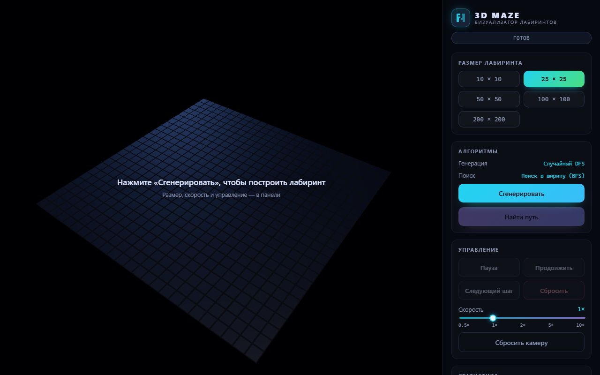

3D Maze
ОпубликованИнтерактивный 3D-визуализатор: строит лабиринт и находит кратчайший путь прямо на глазах.
- Лабиринты до 200 × 200 клеток — интерфейс не зависает, тяжёлые вычисления идут в Web Worker
- Генерация и поиск пути показываются пошагово, скорость от 0,5× до 10×, есть пауза и покадровый режим
- Корректность проверяется автотестами: связность лабиринта и кратчайший путь сверяются с эталоном
- Работает на телефоне: панель сворачивается, камерой можно управлять касаниями